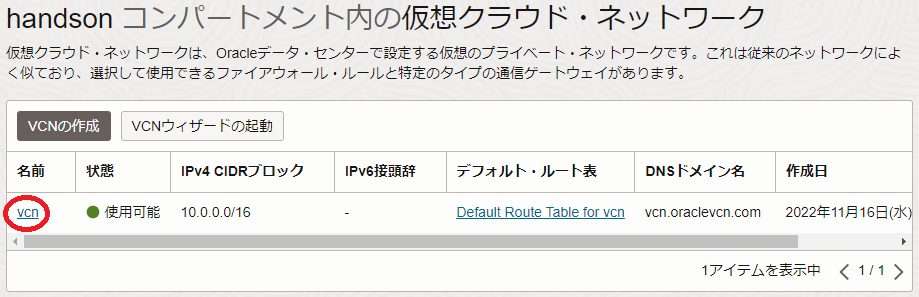
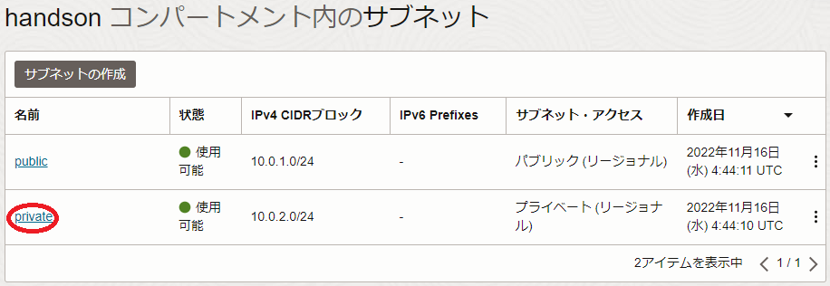
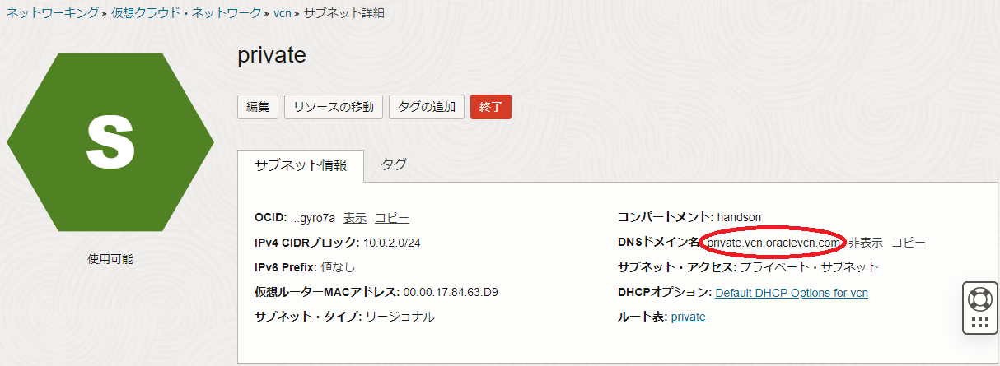

ノード数が多くなるHPCクラスタやGPUクラスタの計算/GPUノードの名前解決は、どのように行うのが効果的でしょうか。
本テクニカルTipsは、仮想クラウドネットワークのDNSを使用した効果的な計算/GPUノードの名前解決方法を解説します。
0. 概要
仮想クラウドネットワークに接続するインスタンスのホスト名は、仮想クラウドネットワークのDNSに正引き・逆引き情報が自動的に登録され、DNS名前解決が可能です。
このため、改めてホストファイルを作成しなければならない/etc/hostsやNISを使用した名前解決より、DNS名前解決を活用するのが効率的です。
ただDNSで名前解決を行う場合、名前解決を行うインスタンスと名前解決対象インスタンスが異なるサブネットに接続されている場合、注意が必要です。
これは、名前解決を行うインスタンスのOSがOracle Linuxの場合、デプロイ直後のresolv.confのsearch行に自身が接続するサブネットのFQDNが含まれるため、同じサブネットに接続するインスタンス同士はインスタンス名で名前解決可能なのに対し、異なるサブネットに接続するインスタンス同士はFQDNでしか名前解決出来ないためです。
そこで、通常パブリックサブネットに接続されるBastionノードで通常プライベートサブネットに接続される計算/GPUノードのホスト名をインスタンス名でDNS名前解決するには、Bastionノードのresolv.confのsearch行にプライベートサブネットのFQDNを追加します。
ここで、仮想クラウドネットワークが提供するDNSは、インスタンス名（compute1）とこれが接続される仮想クラウドネットワーク名（vcn）とサブネット名（private）を使用して、インスタンスのFQDNを以下のように登録します。
compute1.private.vcn.oraclevcn.com
以上を踏まえて以降では、パブリックサブネットに接続されるBastionノードでプライベートサブネットに接続される計算/GPUノードのホスト名をインスタンス名で名前解決する手順を解説します。
1. プライベートサブネットFQDN確認
本章は、通常計算/GPUノードが接続されるプライベートサブネットのFQDNを確認します。
サブネットのFQDNは、OCIコンソールでサブネットが存在するリージョンを選択後、 ネットワーキング → 仮想クラウド・ネットワーク とメニューを辿り、表示される以下画面で該当するサブネットが含まれる仮想クラウド・ネットワークを選択します。

表示される以下画面で、該当するサブネットを選択します。

表示される以下 サブネット詳細 画面の DNSドメイン名 フィールドで、サブネットのFQDNを確認します。
この例では、サブネットのドメイン名が private 、仮想クラウド・ネットワークのドメイン名が vcn のため、FQDNが private.vcn.oraclevcn.com になっています。

2. resolv.confファイル修正
本章は、パブリックサブネットに接続されるBastionノードの/etc/resolv.confファイルを修正します。
Bastionノードで、以下のようにresolv.confファイルのsearch行に計算/GPUノードが接続されるプライベートサブネットのFQDNを追加します。
> diff /etc/resolv.conf_org /etc/resolv.conf
7c7
< search vcn.oraclevcn.com public.vcn.oraclevcn.com
---
> search vcn.oraclevcn.com public.vcn.oraclevcn.com private.vcn.oraclevcn.com
この修正は、このままではOS再起動により元に戻ってしまうため、以下コマンドをBastionノードのopcユーザで実行し、この修正が上書きされないようにします。
> sudo chattr -R +i /etc/resolv.conf
以上の手順で、パブリックサブネットに接続されるBastionノードでプライベートサブネットに接続される計算/GPUノードの名前解決をインスタンス名で行うことが可能になります。
この状態は、resolv.confファイルの修正が出来ない様になっているため、再度修正する場合は、以下コマンドをBastionノードのopcユーザで実行します。
> sudo chattr -R -i /etc/resolv.conf